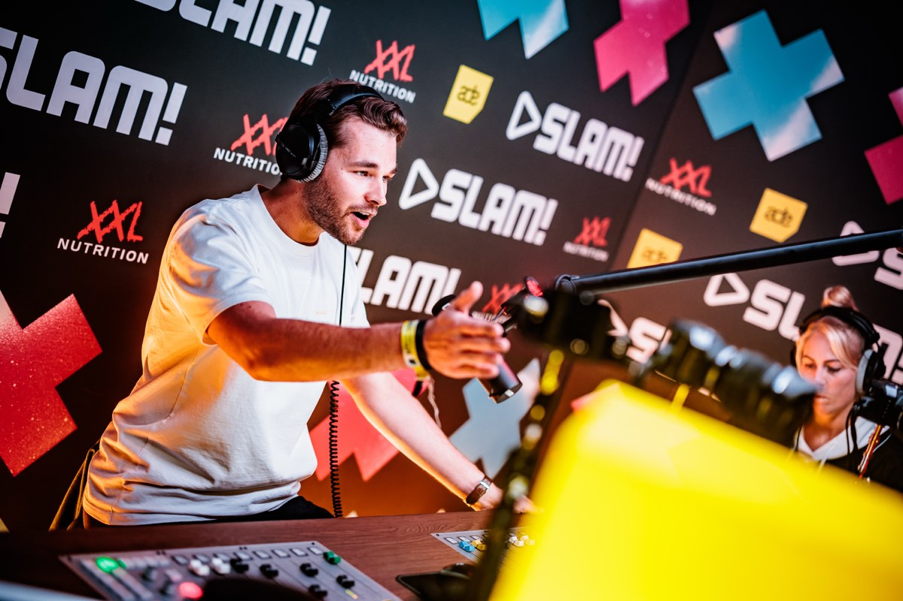

Live op SLAM!Vaste stem sinds 2020
Hielke Boersma
DJ bij SLAM!, DJ op je feestje, presentator en voice-over met jarenlange ervaring. Van corporate events tot festivals — altijd met passie en professionaliteit.
DJ bij SLAM!, DJ op je feestje, presentator en voice-over met jarenlange ervaring. Van corporate events tot festivals — altijd met passie en professionaliteit.
Hielke Boersma is (radio) dj, presentator en voice-over. Sinds 2020 is hij een van de vaste stemmen van radiozender SLAM!. Zijn carrière begon bij OOG TV en Radio, waarna hij via opleidingsprojecten bij Qmusic en Radio 538 zijn weg vond naar de landelijke radio.
Naast zijn werk op de radio is Hielke een ervaren presentator, zowel op het podium als voor de camera. Of het nu gaat om een strak geregisseerde video, een bedrijfscongres of een energiek festivalpanel, hij schakelt moeiteloos tussen stijlen en formats.
Hielke is opgegroeid in Groningen, maar woont tegenwoordig in Utrecht. Daar werkt hij aan uiteenlopende mediaprojecten, van radioshows tot events. Als hij niet achter de microfoon staat, vind je hem achter de draaitafels.
Een selectie van tevreden opdrachtgevers: 100%NL, Bedrijvingsfestival, EY, Gemeente Den Haag, Gemeente Groningen, Ministerie van Justitie en Veiligheid, OOG TV, PWC, Radio 538, RTV Noord, SBS 6, SLAM!. ★★★★★

Een DJ die de sfeer leest en opbouwt in plaats van een playlist afdraait. Van bedrijfsfeest tot bruiloft en festival.
Radio, podium en camera. Scherp, energiek en met humor — van congres tot live talkshow en bedrijfsfilm.
Een stem die blijft hangen. Helder, authentiek en enthousiast, met de juiste tone-of-voice voor elk project.
Hielke Boersma draait met gevoel en energie, en mixt moeiteloos alle genres en de juiste tracks aan elkaar. Of het nu gaat om een bedrijfsfeest, een bruiloft of een festival, hij brengt het publiek precies wat het nodig heeft. Zijn achtergrond in radio maakt dat hij snapt hoe je een spanningsboog opbouwt en hoe je de energie in een zaal aanvoelt. Weten wat Hielke voor jouw feest kan betekenen? Neem vrijblijvend contact op!



Radio is waar het voor Hielke begon — en waar zijn hart nog steeds sneller van gaat kloppen. Als vaste stem van SLAM! brengt hij elke show met energie, humor en scherpte. Hielke spreekt de taal van zijn luisteraars, voelt precies aan wat er speelt en maakt van elk moment iets bijzonders. Hij is een van de vaste presentatoren van Housuh in de Pauzuh, de SLAM! Mixmarathon en de SLAM! WKND MIX en heeft meerdere shows in het weekend bij SLAM!. Daarnaast is hij als invaller regelmatig te horen bij 100%NL.
Als dagvoorzitter zorgt Hielke ervoor dat een evenement gesmeerd loopt. Hij stelt de juiste vragen, houdt de energie erin en brengt een luchtige, maar scherpe stijl. Van zakelijke congressen tot live talkshows, hij houdt het publiek bij de les en de sprekers scherp.
Voor de camera is Hielke een authentieke en toegankelijke presentator. Hij brengt verhalen helder over en weet kijkers te boeien, of het nu gaat om een YouTube-serie, een bedrijfsfilm of een commercial. Zijn ervaring op radio, tv en podium maakt dat hij moeiteloos schakelt tussen verschillende formats en stijlen. Weten wat Hielke voor jouw evenement of videoproductie kan betekenen? Neem vrijblijvend contact op!
Zoek je een voice-over voor een radiocommercial, tv-commercial, webvideo, animatie, billboard, pre-roll, tv-programma, productvideo of uitlegvideo? Hielke Boersma heeft een stem die blijft hangen. Helder, authentiek en enthousiast — met de juiste tone-of-voice voor elk project. Dankzij zijn jarenlange radio-ervaring weet hij precies hoe hij luisteraars kan boeien en hoe een verhaal goed overkomt. Of het nu gaat om een commercial, een documentaire of een bedrijfsfilm, zijn stem geeft de juiste lading. Geïnteresseerd in de stem van Hielke voor jouw productie? Neem vrijblijvend contact op!
Hielke Boersma is een professionele DJ gevestigd in Utrecht, bekend van radiozender SLAM!. Met jarenlange ervaring als feest-DJ voor bedrijfsfeesten, bruiloften en festivals is hij een van de meest gevraagde DJ's in de regio Utrecht.
Je kunt Hielke Boersma eenvoudig boeken via het contactformulier onderaan deze pagina of via info@hielkeboersma.com. Hij is beschikbaar voor feesten, bedrijfsfeesten, bruiloften en festivals in Utrecht en door heel Nederland.
Hielke mixt moeiteloos alle genres en past zijn set altijd aan op het publiek en het evenement. Vanuit zijn werk bij SLAM! heeft hij een sterke basis in house en dance, maar hij speelt ook pop, urban en andere genres — een ervaring op maat, geen standaard playlist.
Hielke Boersma verzorgt als DJ bedrijfsfeesten, bruiloften, festivals, vrijgezellenfeesten, verjaardagsfeesten en corporate events. Hij past zijn muziekstijl altijd aan op het publiek en de sfeer.
Ja, Hielke is beschikbaar door heel Nederland — van Amsterdam en Rotterdam tot Den Haag en Groningen. Neem contact op voor de mogelijkheden.
Hielke is een van de vaste stemmen van SLAM!, waar hij shows presenteert waaronder Housuh in de Pauzuh en de SLAM! Mixmarathon. Eerder was hij ook te horen bij Radio 538 en 100%NL.
Ja, Hielke is beschikbaar als dagvoorzitter voor bedrijfsevents, congressen en awards ceremonies. Hij werkte al voor EY, PWC, Gemeente Den Haag en het Ministerie van Justitie en Veiligheid.
Hielke verzorgt voice-overs voor radiocommercials, tv-commercials, webvideo's, animaties, billboards, pre-rolls, productvideo's en uitlegvideo's.
Hielke Boersma is bereikbaar via e-mail: info@hielkeboersma.com, telefonisch: 06 519 690 25, of via het contactformulier op deze pagina. Hij is gevestigd in Utrecht.
De prijs is afhankelijk van het type evenement, de duur en de locatie. Neem contact op via info@hielkeboersma.com of bel 06 519 690 25 voor een offerte op maat.
Een feest, een event of een voice-over? Stuur een bericht of bel even — ik neem zo spoedig mogelijk contact met je op.